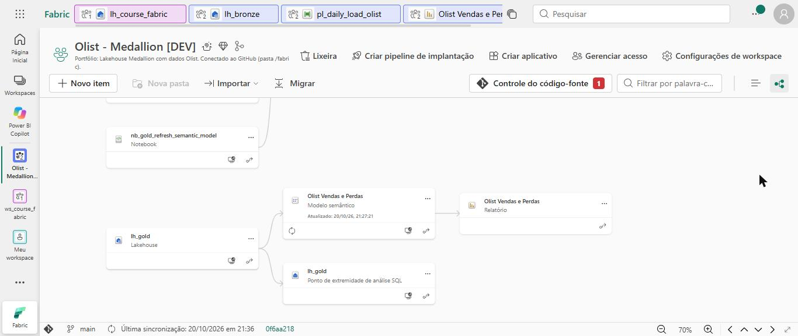
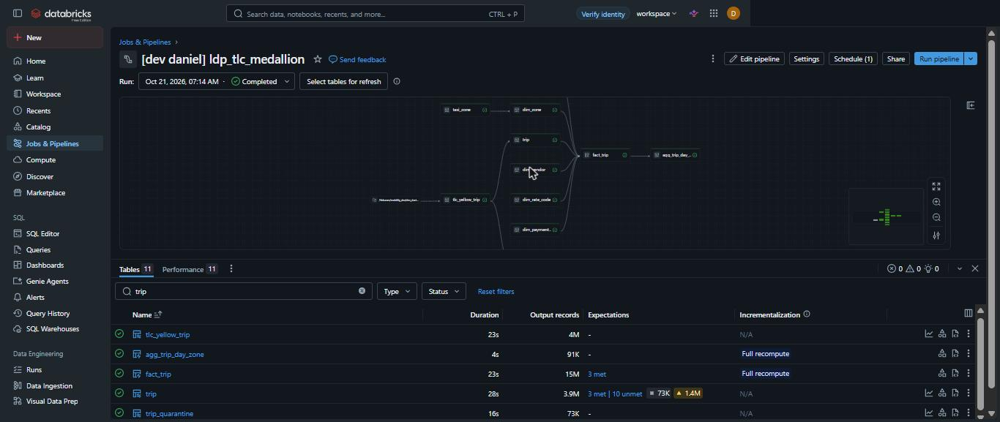
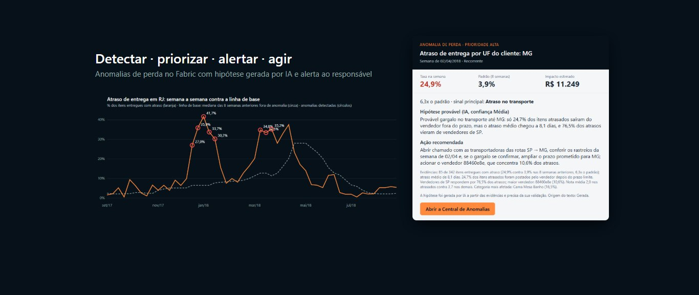
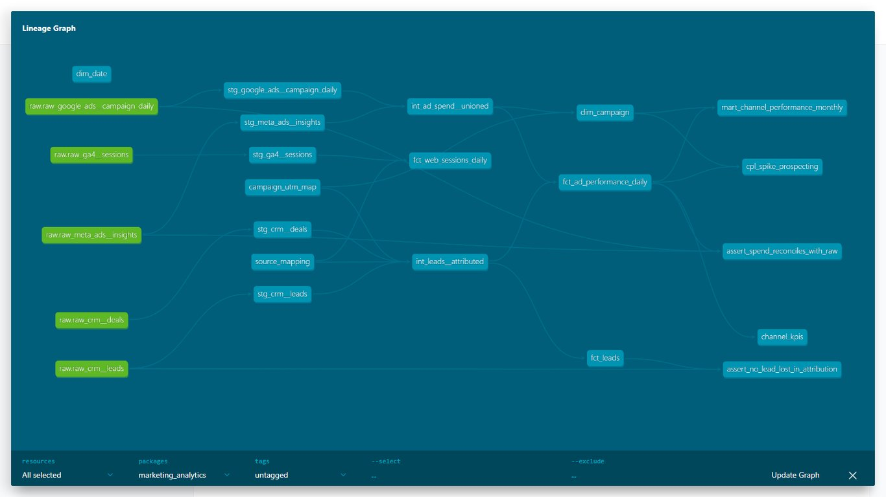
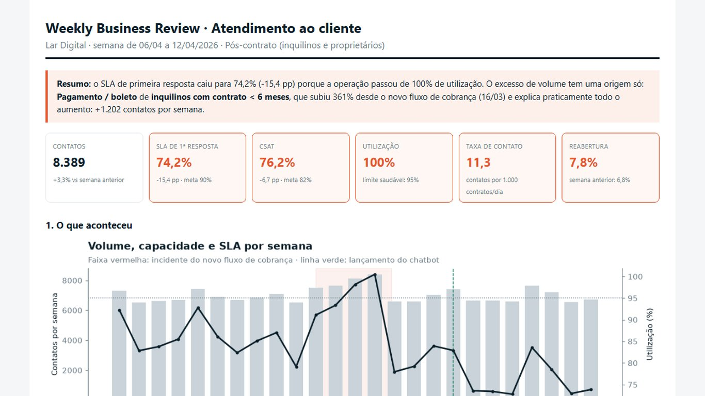
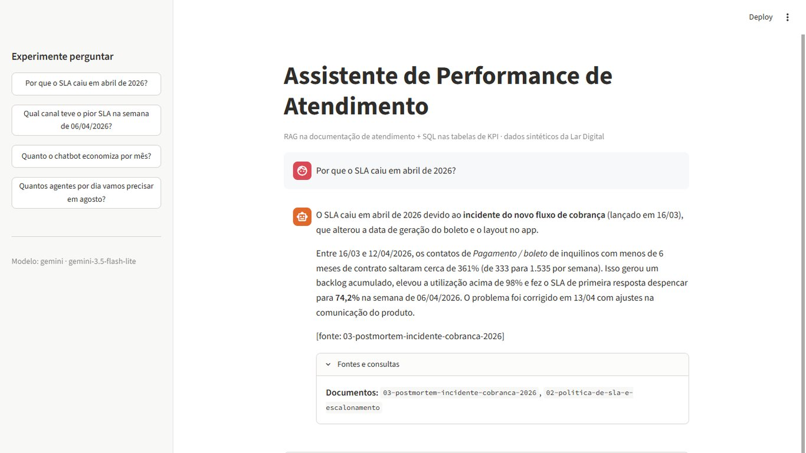
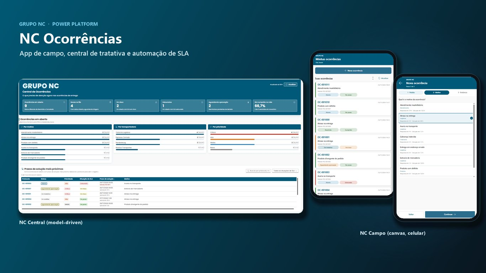
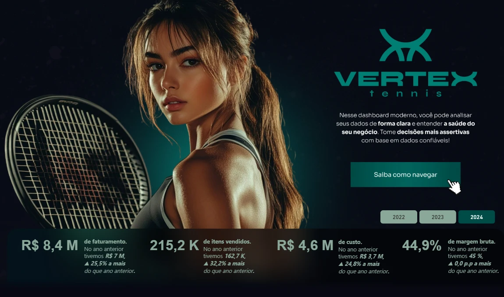
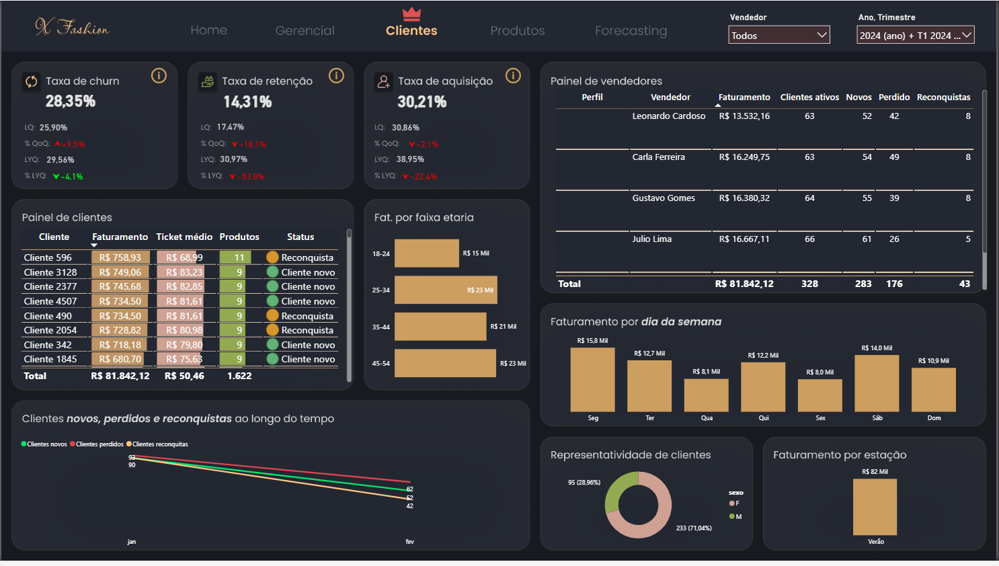

Dashboards & analytics
Management dashboards, KPIs and exploratory analysis with storytelling for sales, finance, marketing and operations.
I'm a Senior BI Analyst who also works as an Analytics Engineer. I cover the full cycle: from understanding the business problem and the KPIs to integrating and modeling the data, all the way to dashboards, analyses, apps and the AI layer.
In Power BI, I work with advanced DAX, Power Query (M), star and snowflake schemas, incremental refresh, RLS, Paginated Reports, subscriptions, workspace apps, the REST API and custom visuals with HTML and SVG. On the data side, I integrate SAP, SQL Server, Oracle, Databricks and APIs into a Lakehouse architecture (Bronze, Silver and Gold) on Microsoft Fabric, with BI as code (PBIP, TMDL and Git) and CI/CD on Azure DevOps.
I also apply AI and automation: Copilot-ready models, agents with Copilot Studio, Power Apps, Power Automate and n8n flows, and an AI-powered framework that generates and standardizes BI projects. I serve clients across many industries, including companies abroad, in areas such as sales, finance (P&L), marketing, trade, customer support and operations. I lead projects end to end, more than 40 so far, mentor teammates and run training sessions for client teams.
From raw data to the dashboards and analyses that support decisions, with engineering standards at every step.
Management dashboards, KPIs and exploratory analysis with storytelling for sales, finance, marketing and operations.
Star and snowflake schemas, business rules and DAX measures in enterprise models on Power BI and Microsoft Fabric.
Lakehouse / Medallion on Fabric and Databricks, performance tuning, RLS, BI as code, CI/CD and migration from Excel, Tableau and Looker.
Copilot-ready models, agents with Copilot Studio, Power Apps and automation with Power Automate and n8n.
Every layer has a job, from source to dashboard. That is what makes the numbers in a report trustworthy.
ERP (SAP), SQL and Oracle databases, APIs, SharePoint and spreadsheets
Raw ingestion, history and lineage
Cleansing, standardization and data quality rules
Facts and dimensions in a star schema
DAX measures, RLS, incremental refresh and AI metadata
Power BI, Copilot, AI agents and apps
Microsoft Fabric · Databricks · Azure · Power BI · Git, Azure DevOps and deployment pipelines (DEV / TST / PRD)

Problem: how much e-commerce revenue is lost to cancellations and late deliveries, and where it is concentrated.
Solution: Data Pipeline and PySpark notebooks across Bronze, Silver and Gold with a data quality quarantine, a star schema and a Direct Lake semantic model versioned in TMDL.
Result: R$ 108K in lost revenue and 6.8% of orders delivered late, concentrated in the North and Northeast of Brazil.

Problem: process millions of New York City taxi trips incrementally, with guaranteed quality and governance.
Solution: Lakeflow Declarative Pipelines with Auto Loader, expectations with quarantine, SCD2 and a star schema, governed in Unity Catalog and deployed with Asset Bundles and GitHub Actions.
Result: a fact table with 15 million trips and a quality gate that blocks the job when data fails.

Problem: the dashboard shows how much was lost, but not which week broke the pattern, why, or who has to act.
Solution: anomaly monitors on Fabric, root-cause hypothesis and recommended action with Fabric AI functions, an alert to the owner through Power Automate and a Data Agent over the Copilot-ready model.
Result: 30 anomalies over two years, 10 of them high priority, each with an owner, evidence and a next step.

Problem: Google Ads, Meta Ads, GA4 and CRM exports that do not match, with messy UTMs, repeated rows and duplicated leads.
Solution: dbt staging, intermediate and marts with a star schema, UTM rules in seeds, 63 tests (including spend reconciled to the cent) and lineage docs.
Result: trustworthy CPL, CAC and ROAS. Platforms reported 20% more conversions than the CRM, and the deep dive showed CPL rose 45% because of the landing page, not the auction.

Problem: support SLA collapsed and leadership needed the cause, an action plan and the capacity required for the coming weeks.
Solution: KPIs defined once in SQL, a deep dive by reason, segment and contract, a Holt-Winters forecast with backtest, a capacity plan and a code-generated weekly review.
Result: a single customer group explained practically the whole rise in contacts. A forecast with 6.7% error and an agent plan for July and August.

Problem: answers about SLA, causes and capacity were spread across the dashboard, policies and post-mortems, and a generic chatbot makes numbers up.
Solution: a function calling agent that searches the docs with embeddings and queries the KPI tables with read-only SQL, running on Gemini or OpenAI.
Result: 15 of 15 correct answers in the evaluation, the right document in every search, and "not found" when the question is out of scope.
Four pages (Executive, Sales, Logistics and Customer Service) that answer how the business is doing, where revenue is made and lost and what leadership should prioritize.
Order, item, delivery, customer and service data spread across different systems, with mixed date formats, duplicated orders and inconsistent text. Leadership could not see revenue, cancellations, delays and service tickets in one place and did not trust the numbers.
Power Query ETL with custom functions for dates, text and states, deduplication and a data quality status on every table. A star schema with 4 facts and 5 dimensions and DAX measures with year-over-year comparison, ABC curve, forecast, dynamic indicators and a text that points out the priority for the period.
In seconds, leadership sees where revenue is lost (cancellation, return or discount), which carriers and regions are late and which tickets are critical, with a suggested action generated by the dashboard itself. The project comes with full technical and business documentation.
The dashboard above shows that more than 40% of Grupo NC orders are late. This project takes that insight into operations: drivers log the issue on their phone, the service desk handles it with a deadline and an owner, and Power Automate calculates the SLA and returns the ticket number.

Problem: delivery issues arrived by email, spreadsheet and WhatsApp, with no deadline, owner or history, and nobody knew which ones would breach the SLA.
Solution: a mobile canvas app with barcode scanning, photo and location; a model-driven app with queue, dashboard and business process flow; Dataverse with security roles; and flows that calculate deadline and priority and return the ticket number.
Result: the driver gets the ticket number on the spot, and the issue lands in the service desk queue with deadline, priority, customer and carrier filled in automatically.

Revenue, cost and margin by category, segment, region and state, with period comparisons and a 12-month forecast.

Sales, customers and products with churn, retention, acquisition, a sales rep panel and forecasting.
A few examples of work that connects analytics, operations and strategy to bring clarity to decisions.
3 h → 15 min
Problem: models that grew without care at clients in education, wholesale grocery and facilities, with hours-long refreshes and late data at the start of the day.
Solution: rewrote the DAX logic, remodeled tables, removed unused columns and implemented incremental refresh.
Result: refresh from 3 hours to 15 minutes, and other models from 1 hour to 5 minutes, with the same numbers.
30+ reports
Problem: reports spread across different tools, each with its own logic and numbers that didn't match.
Solution: inventory and prioritization by usage, a model and layout standard and side-by-side validation against the old tool.
Result: 30+ reports migrated with validated numbers, and 5+ departments using a single source.
3 days → 20 min
Problem: reports built by hand for every client and routines that consumed hours of manual work.
Solution: an AI-powered framework that reads the sources, generates a reviewed configuration and builds the full Power BI project, with automated validation.
Result: survey report delivery from 3 days to 20 minutes, and other routines from 4 hours to 5 minutes.
Two wins in the Xperiun dashboard challenge. The first edition brought together 92+ data analysts around a road accidents case.
"Daniel has a remarkable ability to analyze data, combined with a natural talent for design and storytelling." (translated)
Senior-level work from business requirements to analysis and models in production, with engineering standards, performance and governance.
Dimensional modeling (Kimball), star and snowflake schemas and enterprise semantic models.
Lakehouse, Warehouse, Medallion, Data Pipelines, Dataflow Gen2, Copy Job, PySpark notebooks and Delta Lake.
Advanced DAX, Power Query (M), Paginated Reports, subscriptions, apps, RLS, REST API, HTML/SVG, DAX Studio and Python dashboards with Streamlit, Dash and Plotly.
Advanced SQL, SAP, SQL Server, Oracle, APIs, Python (pandas, NumPy, scikit-learn), time series, dbt and Snowflake to integrate, prepare and analyze data.
Copilot, Copilot Studio, RAG agents, OpenAI and Anthropic APIs, Azure OpenAI, prompt engineering, Power Apps, Power Automate and n8n.
PBIP, TMDL, Git, Azure DevOps, deployment pipelines, CI/CD, documentation and best practices (BPA).
I work on remote projects in BI and data analytics, data modeling, data engineering and AI on the Microsoft stack, alongside business and technology teams.